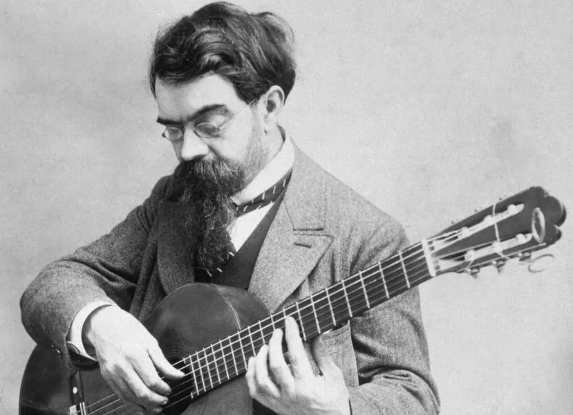

Music · Romantic guitar · Guitar
Francisco Tárrega


Francisco Tárrega was a Spanish guitarist, composer, and teacher born in Vila-real in 1852. He died in Barcelona in 1909. His short pieces and studies became central to the classical guitar repertoire, and his arrangements brought music written for other instruments onto six strings.
Composer arrangement studio
Sheet music
Choose Adelita or Capricho árabe to read, play, or arrange a complete Tárrega score, or try the original classroom voice-balance study.
Arranging with care
A source staff is not always the melody: in an orchestral score, find the staff carrying the theme. A two-part piano study pairs your selected voice with a source bass; it is not a concert reduction and wide leaps may need redistribution. Saxophone notation is transposed while playback stays at concert pitch. Violin parts stay at concert pitch and are moved by octaves to sit above the open G string. Guitar tab preserves pitch and rhythm but may need a different octave or fingering. Chords are prepared for the Ode to Joy theme only; classical harmony elsewhere requires score study rather than automatic chord guesses. Original ensembles are available only where the source contains those parts. Piano reductions and original classroom studies retain their source identities.
Recordings: Nicholaus P. Brosowsky’s Tonejs-Instruments sample collection, CC BY 3.0; VSCO 2 Community Edition, CC0. Sample credits and processing.
Meet Francisco Tárrega
Francisco Tárrega was a Spanish guitarist, composer, and teacher born in Vila-real in 1852. He died in Barcelona in 1909. His short pieces and studies became central to the classical guitar repertoire, and his arrangements brought music written for other instruments onto six strings.
His musical world belonged to the late Romantic period. In works such as Lágrima, a short melodic gesture can carry an expressive phrase; in Recuerdos de la Alhambra, repeated high notes create the impression of a continuous singing line.
Tárrega’s influence includes teaching as well as composition. A score asks the guitarist to balance separate musical roles: melody, accompaniment, and bass. The challenge is to help listeners follow those roles even though one player produces them all.
A life in music
- 1852 Born in Vila-real, Spain.
- 1899 Recuerdos de la Alhambra, dated by the Real Academia de la Historia’s work list.
- 1909 Dies in Barcelona.
- Today Lágrima, Capricho árabe, and Recuerdos de la Alhambra remain part of the guitar repertoire.
How can a plucked string seem to sing?
A plucked string starts loudly and fades. To suggest a sustained melody, a guitarist can repeat a high note rapidly and evenly while the thumb supplies lower accompaniment notes. This is a guitar tremolo texture.
A common right-hand pattern is p–a–m–i: thumb, ring, middle, index. The thumb plays a lower accompaniment note; the other three fingers repeat the melody note. The melody can change pitch over the phrase, even though it repeats within each small group.
Here tremolo means repeated attacks. Vibrato instead varies pitch around a note. Neither technique automatically makes a phrase expressive: balance, timing, and direction still matter.
In slower music such as Lágrima, listen for the same separation of roles without a constant tremolo: a high melody can stand out above quieter lower notes.
Separate the voices, then connect the melody
Compare a high melody plucked once per beat with the same melody repeated three times within each beat. A lower note begins each group in both versions. Which version suggests a longer singing line?
Read and play the tablature
Standard tuning, low to high: E–A–D–G–B–e. The top line is the thinnest, highest string. Numbers are frets, not fingers; 0 means an open string. Read left to right. Use the audio to hear rhythm: spacing in this tab is a reading aid, not standard rhythmic notation.
p a m i | p a m i | p a m i | p a m i e|----12-12-12-|---13-13-13-|---12-12-12-|---10-10-10-| B|-------------|------------|------------|------------| G|-------------|------------|------------|------------| D|-------------|-2----------|------------|-2----------| A|--0----------|------------|-3----------|------------| E|-------------|------------|------------|------------|
In the single-attack version, play only the first upper note in each group; in the tremolo version, play all three. The lower note and the upper notes occur successively, not simultaneously.
For a complete composition, see Lágrima: complete tablature at IMSLP, edited by Pierre Perol-Schneider (2012), licensed CC BY-NC 3.0. That modern tablature edition is openly licensed, not public domain. The original score is also listed there as public domain.
This classroom pattern and tablature are original CC0 teaching materials; they are not a transcription of Recuerdos de la Alhambra.
Ready. Press Play to hear the pattern.
This original four-beat teaching pattern models the order of attacks, not a passage from Recuerdos de la Alhambra. The synthesized pluck is a simplified sound; a real player shapes each finger’s tone and balance.
Read the notes and timing
- On a desk, slowly tap thumb–ring–middle–index. Keep the four taps even; do not force speed or stretch. No guitar is required.
- Read the event list: distinguish lower accompaniment notes from repeated high melody notes. Which musical role has more attacks?
- Listen at 60 BPM, then raise the tempo. Explain what changes in your impression of continuity, and what still sounds like separate plucks.
Watch Tárrega’s music performed
Watch guitarist Alexandra Whittingham perform Recuerdos de la Alhambra by Francisco Tárrega. Follow her picking hand: the thumb moves through the accompaniment while repeated finger strokes sustain the upper melody through tremolo.
Discuss: Can you follow the upper melody and lower accompaniment separately? Describe how the picking hand helps one guitar suggest several voices.
Watch the idea in tablature
Watch the lower thumb notes and the high melody, then compare single attacks with repeated tremolo attacks. The active fret number lights up as its note sounds. Pause or use full screen to study a fingering.
Video description and transcript
At 0:00 the first pattern is introduced; it plays from 0:02 to 0:06. The comparison pattern is introduced at 0:06.5 and plays from 0:07 to 0:11. The upper melody E–F–E–D is supported by A–E–C–E below. First hear one high attack per beat, then three repeated high attacks per beat. Six lines show guitar strings, with the thinnest string at the top. Fret numbers highlight in time with the sound. There is no speech.
Explore more works for guitar
Open the Tárrega collection at IMSLP for scores and available performances. Check the performer and license of any recording before reusing it; a public-domain composition does not make every recording public domain.
- Adelita. Choose it in the sheet music studio above. Compare its E-minor and E-major sections, then follow the return to the opening. How does the same guitar suggest a change of mood?
- Lágrima. Follow the highest voice first. On a second hearing, attend to the low notes. Where does a melodic phrase seem to breathe? Compare the major opening with the contrasting minor section.
- Recuerdos de la Alhambra. Listen for the repeated upper line and the moving lower accompaniment. Do you hear one instrument or the suggestion of several voices? Use a score to check your impression.
- Capricho árabe. Listen for changes of speed and mood. Describe what you hear with musical evidence; a title is not proof that a piece represents an entire culture.
A lasting musical voice
Tárrega’s repertoire connects technique to musical expression: a study can train the hand while teaching a player to shape a phrase. His arrangements also invite a useful question: which parts of a larger texture must a guitarist preserve, and which can be suggested?
Compare Django Reinhardt, whose band divides melody, chords, and bass among several musicians. Then explore the guitar lesson to connect pitch and string length.
Practice and reflection
Use the listening experiment to support your answers.
0 / 3
Compose and explain
Draw two lines: a high melody and lower accompaniment. Mark which notes should stand out. Explain how one guitarist could make a listener hear two musical roles.
Teacher discussion guide
Ask students to name the part they changed and the part they kept steady. Accept different phrases when students can explain their choices using pulse, pitch, texture, or balance. Replay a short example to test their explanation.
Sources and further exploration
- Real Academia de la Historia: Francisco Tárrega Eixea — biography and work list.
- Palazzetto Bru Zane: Francisco Tárrega — repertoire and arrangements.
- IMSLP: Tárrega scores — examine editions and their notices.